전기공사기사 (2016-10-01 기출문제)
1과목: 전기응용 및 공사재료
1. 전열의 원리와 이를 이용한 전열 기기의 연결이 틀린 것은?
- 저항 가열 – 전기 다리미
- 아크 가열 – 전기 용접기
- 유전 가열 – 온열 치료 기구
- 적외선 가열 – 피부 미용 기기
(정답률: 78%)

2. 다음 용접 방법 중 저항 용접이 아닌 것은?
- 점 용접
- 이음매 용접
- 돌기 용접
- 전자빔 용접
(정답률: 87%)
3. 자체 방전이 적고 오래 저장할 수 있으며 사용 중에 전압 변동률이 비교적 적은 것은?
- 공기 건전지
- 보통 건전지
- 내한 건전지
- 적층 건전지
(정답률: 79%)
4. 네온 전구의 용도로서 틀린 것은?
- 소비 전력이 적으므로 배전반의 표시등에 적합하다.
- 부글로우를 이용하고 있어 직류의 극성 판별에 사용된다.
- 일정한 전압에서 점등되므로 검전기, 교류 파고값의 측정에 이용할 수 없다.
- 네온 전구는 전극 간의 길이가 짧으므로 부글로우를 발광으로 이용한 것이다.
(정답률: 73%)
5. 선박의 전기 추진에 많이 사용되는 속도제어 방식은?
- 크레머 제어방식
- 2차저항 제어방식
- 극수변환 제어방식
- 전원 주파수 제어방식
(정답률: 63%)
6. 다음 전기 차량의 대차에 의한 분류가 아닌 것은?
- 4륜차
- 전동차
- 보기차
- 연결차
(정답률: 70%)
7. 다음 설명 중 옳은 것은?
- SSS는 3극 쌍방향 사이리스터로 되어 있다.
- SCR은 PNPN이라는 2층의 구조로 되어 있다.
- 트라이액은 2극 쌍방향 사이리스터로 되어 있다.
- DIAC은 쌍방향으로 대칭적인 부성 저항을 나타낸다.
(정답률: 64%)
8. 배전선의 전압을 조정하는 방법으로 적당하지 않은 것은?
- 승압기
- 병렬 콘덴서
- 변압기의 탭조정
- 유도전압 조정기
(정답률: 82%)
9. 높이 10[m]에 있는 용량 100[m3]의 수조를 만조시키는 데 필요한 전력량은 약 몇 [kWh]인가? (단, 전동기 및 펌프의 종합 효율은 80[%], 여유계수 1.2, 손실수두는 2[m]이다.)
- 1.5
- 2.4
- 3.7
- 4.9
(정답률: 43%)
10. 아크의 전압, 전류 특성은?
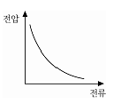
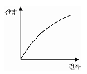
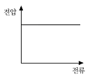
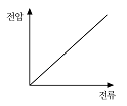
(정답률: 82%)
11. 완철 장주의 설치 중 설치 위치 및 방법을 설명한 것으로 틀린 것은? (문제 오류로 실제 시험에서는 3, 4번이 정답처리 되었습니다. 여기서는 4번을 누르면 정답 처리 됩니다.)(오류 신고가 접수된 문제입니다. 반드시 정답과 해설을 확인하시기 바랍니다.)
- 완철은 교통에 지장이 없는 한 긴 쪽을 도로측으로 설치한다.
- 완철용 M 볼트는 완철의 반대 측에서 삽입하고 완철이 밀착되게 조인다.
- 완철 밴드는 창출 또는 편출 개소를 제외하고 보통 장주에만 사용한다.
- 단완철은 전원 측에 설치하며 하부 완철은 상부 완철과 동일한 측에 설치한다.
(정답률: 71%)
12. 투광기와 수광기로 구성되고 물체가 광로를 차단하면 접점이 개폐되는 스위치는?
- 압력 스위치
- 광전 스위치
- 리밋 스위치
- 근접 스위치
(정답률: 85%)
13. 다음 전지 중 물리 전지에 속하는 것은?
- 열전지
- 연료 전지
- 수은 전지
- 산화은 전지
(정답률: 72%)
14. 폴리머애자의 설치 부속자재를 옳게 나열한 것은?
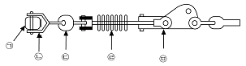
- ㉠ 경완철, ㉡ 볼쇄클, ㉢ 소켓 아이, ㉣ 폴리머 애자, ㉤ 데드앤드 크램프
- ㉠ 볼쇄클, ㉡ 소켓 아이, ㉢ 폴리머 애자, ㉣ 경완철, ㉤ 데드앤드 크램프
- ㉠ 소켓 아이, ㉡ 볼 쇄클, ㉢ 데드앤드 크램프, ㉣ 폴리머 애자, ㉤ 경완철
- ㉠ 경완철, ㉡ 폴리머 애자, ㉢ 소켓 아이, ㉣ 데드앤트 크램프, ㉤ 볼쇄클
(정답률: 79%)
15. 개폐기의 명칭과 기호의 연결로 틀린 것은?
- 2극 쌍투형 : DPDT
- 2극 단투형 : DPST
- 단극 쌍투형 : SPDT
- 단극 단투형 : TPST
(정답률: 81%)
16. 가공 전선로에 사용되는 전선의 구비 조건으로 틀린 것은?
- 도전율이 높은 것
- 내구성이 있을 것
- 비중(밀도)이 클 것
- 기계적인 강도가 클 것
(정답률: 89%)
17. 19/1.8[mm] 경동연선의 바깥지름은 몇 [mm]인가?
- 8.5
- 9
- 9.5
- 10
(정답률: 61%)
18. 공칭전압 22[kV]인 중성점 비접지 방식의 변전소에서 사용하는 피뢰기의 정격 전압은 몇 [kV]인가?
- 18
- 20
- 22
- 24
(정답률: 73%)
19. 고압으로 수전하는 변전소에서 접지 보호용으로 사용되는 계전기에 영상전류를 공급하는 계전기는?
- CT
- PT
- ZCT
- GPT
(정답률: 88%)
20. 아웃렛 박스(정션박스)에서 전등선로를 연결하고 있다. 박스 내에서 전선 접속방법으로 옳은 것은?
- 납땜
- 압착 단자
- 비닐 테이프
- 와이어 커넥터
(정답률: 82%)
2과목: 전력공학
21. 송전선로의 인덕턴스와 정전용량은 등가 선간거리 D가 증가하면 어떻게 되는가?
- 인덕턴스는 증가하고 정전 용량은 감소한다.
- 인덕턴스는 감소하고 정전용량은 증가한다.
- 인덕턴스, 정전용량이 모두 감소한다.
- 인덕턴스, 정전용량이 모두 증가한다.
(정답률: 31%)
22. 피뢰기의 접지 공사는?(관련 규정 개정전 문제로 여기서는 기존 정답인 1번을 누르면 정답 처리됩니다. 자세한 내용은 해설을 참고하세요.)
- 제 1종 접지 공사
- 제 2종 접지 공사
- 제 3종 접지 공사
- 특별 제 3종 접지 공사
(정답률: 32%)
23. 가공전선을 200[m]의 경간에 가설하였더니 이도가 5[m] 이었다. 이도를 6[m]로 하려면 이도를 5[m]로 하였을 때보다 전선의 길이는 약 몇 [cm] 더 필요한가?
- 8
- 10
- 12
- 15
(정답률: 19%)
24. 증기터빈 출력을 P[kW], 증기량을 W[t/h], 초압 및 배기의 증기 엔탈피를 각각 i0, i1[kcal/kg]이라 하면 터빈의 효율 ῃ
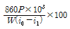
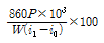
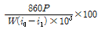
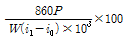
(정답률: 22%)
25. ACSR을 동일한 길이와 전기저항을 갖는 경동연선에 비교한 것으로 옳은 것은?
- 바깥지름은 작고, 중량은 크다.
- 바깥지름은 크고, 중량은 작다.
- 바깥지름과 중량이 모두 작다.
- 바깥지름과 중량이 모두 크다.
(정답률: 35%)
26. 주파수를 f전압을 E라고 할 때 유전체 손실은?
- fE
- fE2
- E/f
- f/E2
(정답률: 22%)
27. 모선방식의 종류에 속하지 않는 것은?
- 단일 모선
- 2중 모선
- 3중 모선
- 환상 모선
(정답률: 29%)
28. 송전 계통의 전력용 콘덴서와 직렬로 연결하는 직렬리액터로 제거되는 고조파는?
- 제 2고조파
- 제 3고조파
- 제 5고조파
- 제 7고조파
(정답률: 33%)
29. 전원전압 6600[V], 1선의 저항 3[Ω], 리액턴스 4[Ω]의 단상 2선식 전선로의 중간 지점에서 단락한 경우, 단락용량은 약 몇 [MVA]인가? (단, 전원 임피던스는 무시한다.)
- 6.4
- 6.7
- 7.4
- 8.7
(정답률: 19%)
30. 가스절연 개폐장치(GIS)의 내장기기가 아닌 것은?
- 차단기
- 단로기
- 주변압기
- 계기용 변압기
(정답률: 22%)
31. 직접접지방식이 초고압 송전선에 채용되는 이유 중 가장 적당한 것은?
- 송전선의 안정도가 높으므로
- 지락 시의 지락 전류가 적으므로
- 계통의 절연을 낮게 할 수 있으므로
- 지락 고장 시 병행 통신선에 유기되는 유도 전압이 적기 때문에
(정답률: 25%)
32. 전력 원선도에서 알 수 없는 것은?
- 유효 전력
- 코로나 손실
- 조상 용량
- 전력 손실
(정답률: 33%)
33. 수차의 조속기 구성요소 중 회전속도의 과도 현상에 의한 난조를 방지하기 위한 요소는?
- 스피더
- 배압 밸브
- 서보 모터
- 복원 기구
(정답률: 15%)
34. 전력선에 의한 통신선로의 전자유도장해의 주된 발생요인은?
- 영상전류가 흐르기 때문에
- 전력선의 연가가 충분하기 때문에
- 전력선의 전압이 통신선로보다 높기 때문에
- 전력선과 통신선로 사이의 차폐효과가 충분하기 때문에
(정답률: 33%)
35. 유수가 갖는 에너지가 아닌 것은?
- 위치 에너지
- 수력 에너지
- 속도 에너지
- 압력 에너지
(정답률: 22%)
36. 송전 계통에서 재폐로 방식을 채택하는 주된 이유는?
- 선택 차단이 가능하므로
- 다중 지락으로 발전되므로
- 다중 지락으로의 이행이 적으므로
- 송전 선로의 고장이 대부분 순간 고장이므로
(정답률: 29%)
37. 부하에 따라 전압 변동이 심한 급전선을 가진 배전 변전소에서 가장 많이 사용되는 전압 조정장치는?
- 유도전압 조정기
- 직렬 리액터
- 계기용 변압기
- 전력용 콘덴서
(정답률: 29%)
38. 직류 송전방식이 교류 송전방식에 비하여 유리한 점을 설명한 것으로 틀린 것은?
- 선로의 절연이 쉽다.
- 통신선에 대한 유도잡음이 적다.
- 표피효과에 의한 송전손실이 없다.
- 정류가 필요 없고 승압 및 강압이 쉽다.
(정답률: 29%)
39. 그림과 같은 전력 계통에서 A점에 설치된 차단기의 단락용량은 몇 [MVA]인가? (단, 각 기기의 리액턴스는 발전기 G1,G2=15[%](정격용량 15[MVA]기준), 변압기 8[%](정격용량 20[MVA]기준), 송전선 11[%](정격용량 10[MVA]기준)이며, 기타 다른 정수는 무시한다.)
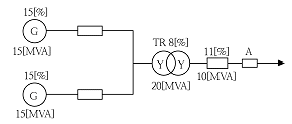
- 20
- 30
- 40
- 50
(정답률: 22%)
40. 그림과 같은 회로의 합성 4단자 정수에서 B0의 값은? (단,Ztr 은 수전단에 접속된 변압기의 임피던스이다.)
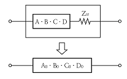
- B+Ztr
- A+B ‧ Ztr
- B+A ‧ Ztr
- C+D ‧ Ztr
(정답률: 23%)
3과목: 전기기기
41. 8극의 3상 유도전동기가 60[Hz]의 전원에 접속되어 운전할 때 864[rpm]의 속도로 494[Nm]의 토크를 낸다. 이때 동기와트의 값은 약 몇 [W]인가?
- 76214
- 53215
- 46558
- 34761
(정답률: 24%)
42. 무정전 전원장치(UPS)에 사용되고 있는 컨버터의 주된 사용 목적은?
- 교류 전압의 변화를 안정화시키기 위함이다.
- 교류 전압의 주파수를 변화시키기 위함이다.
- 교류 전압을 직류 전압으로 변화시키기 위함이다.
- 교류 전압을 다른 교류 전압으로 변화시키기 위함이다.
(정답률: 31%)
43. 3상 외철형 변압기의 3권선 A, B, C를 모두 동일한 방향으로 권선하였다. 이 변압기 계철부의 자속은 주자속의 몇 배가 되는가?
- 1/4
- 1/2
- 3/2
- √3/2
(정답률: 20%)
44. 직류기에서 전기자 반작용 중 감자 기자력 ATd[AT/pole]는 어떻게 표시되는가? (단, α:브러시의 이동각, Z:전기자 도체수, p:극수, Ia:전기자 전류, a:전기자 병렬 회로수이다.)
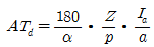
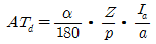
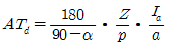
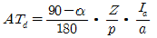
(정답률: 23%)
45. 3상 전원의 수전단에서 전압 3300[V], 800[A], 뒤진 역률 0.8의 전력을 공급받고 있을 때, 동기 조상기 역률을 1로 개선하고자 한다. 필요한 동기 조상기의 용량은 약 몇[kVA]인가?
- 785
- 1525
- 2744
- 3430
(정답률: 21%)
46. 어떤 변압기의 전압 변동률은 부하역률 100[%]에서 2[%], 부하역률 80[%]에서 3[%]이다. 이 변압기의 최대 전압 변동률은 약 몇[%]인가?
- 3.1
- 4.2
- 5.1
- 6.2
(정답률: 15%)
47. 단상 직권 정류자 전동기의 종류에 속하지 않는 것은?
- 직권형
- 보상 직권형
- 보극 직권형
- 유도보상 직권형
(정답률: 21%)
48. 주상 변압기의 고압측에 몇 개의 탭을 만드는 이유는?
- 부하 전류를 적게 하기 위하여
- 변압기의 역률을 조정하기 위하여
- 수전점의 전압을 조정하기 위하여
- 변압기의 철손을 조정하기 위하여
(정답률: 30%)
49. 정격부하로 운전 중인 3상 유도전동기의 전원 한 선이 단선되어 단상이 되었다. 부하가 불변일 때 선전류는 대략 몇 배인가?
- 3
- 3/2
- √3
- 2/√3
(정답률: 27%)
50. 회전자 동기각속도 w0, 회전자 각속도 w인 유도 전동기의 2차 효율은?
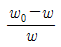
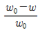
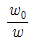
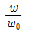
(정답률: 21%)
51. 서보 모터의 마이컴 제어에 있어 기능상 3요소에 속하지 않는 것은?
- 토크 제어
- 속도 제어
- 위치 제어
- 순서 제어
(정답률: 28%)
52. 10[kVA], 2000/100[V] 변압기의 1차 환산 등가 임피던스가 6+j8[Ω]일 때 %리액턴스 강하는 몇 [%]인가?
- 1.5
- 2
- 5
- 10
(정답률: 25%)
53. 권선형 유도전동기가 있다. 2차 회로는 Y접속으로 되어 있고, 그 각 상의 저항은 0.3[Ω]이며, 1차와 2차의 리액턴스의 합은 2차측에서 보면 1.5[Ω]이다. 기동 때 최대 토크를 발생시키기 위한 외부 저항은 몇 [Ω]인가? (단, 1차 권선의 저항은 무시한다.)
- 1.2
- 1.4
- 1.55
- 1.6
(정답률: 17%)
54. 정류회로에서 평활회로를 사용하는 이유는?
- 정류 전압을 2배로 하기 위해
- 출력 전압의 맥류분을 감소시키기 위해
- 출력 전압의 크기를 증가시키기 위해
- 정류 전압의 직류분을 감소시키기 위해
(정답률: 31%)
55. 8극 900[rpm] 동기 발전기로 병렬 운전하는 극수 6의 교류 발전기의 회전수는 몇 [rpm]인가?
- 900
- 1000
- 1200
- 1400
(정답률: 32%)
56. 380[V], 60[Hz], 4극, 10[kW]인 3상 유도전동기의 전부하 슬립이 3[%]이다. 전원 전압을 10[%] 낮추는 경우 전부하 슬립은 약 몇[%] 인가?
- 2.8
- 3.7
- 4.1
- 5.0
(정답률: 19%)
57. 3상 동기 발전기의 각 상의 유기기전력에서 제3고조파를 제거할 수 있는 코일간격/극간격은? (단, 전기자 권선은 단절권으로 한다.)
- 0.11
- 0.33
- 0.67
- 1.34
(정답률: 20%)
58. 직류 전동기를 정격전압에서 전부하 전류 100[A]로 운전할 때, 부하토크가 1/2로 감소하면 그 부하전류는 약 몇 [A]인가? (단, 자기 포화는 무시한다.)
- 60
- 71
- 80
- 91
(정답률: 21%)
59. 변압기에 사용되는 절연유의 특성이 아닌 것은?
- 응고점이 높아야 한다.
- 인화점이 높아야 한다.
- 냉각 효과가 커야 한다.
- 고온에서 산화되지 않아야 한다.
(정답률: 33%)
60. 변압기의 병렬운전 조건이 아닌 것은?
- 극성이 같아야 한다.
- 권수비가 같아야 한다.
- 3상식에서는 상회전 방향 및 위상 변위가 같아야 한다.
- %저항강하 및 %리액턴스 강하는 같지 않아도 된다.
(정답률: 28%)
4과목: 회로이론 및 제어공학
61. 각 상의 전류가 다음과 같을 때 영상 대칭분 전류[A]는?
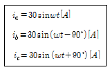
- 10sinwt
- 30sinwt
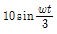
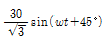
(정답률: 24%)
62.
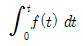
을 라플라스 변환하면?- s2F(s)
- sF(s)
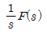
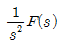
(정답률: 25%)
63. 대칭 12상 교류 성형(Y) 결선에서 상전압이 50[V]일 때 선간전압은 약 몇 [V]인가?
- 86.6
- 43.3
- 28.8
- 25.9
(정답률: 12%)
64. 3개의 같은 저항 R[Ω]를 그림과 같이 △결선하고, 기전력 V[V], 내부저항 r[Ω]인 전지를 n개 직렬 접속하였다. 이때 전지 내에 흐르는 전류가 I[A]라면 R[Ω]은?
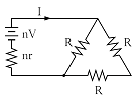
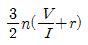
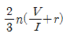
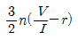
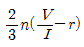
(정답률: 18%)
65. 다음 회로에서 a-b 사이의 단자전압 Vab[V]는?
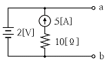
- 2
- -2
- 5
- -5
(정답률: 23%)
66. 정상상태에서 t=0인 순간 스위치 S를 열면 이 회로에 흐르는 전류 i(t)는?
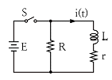
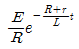
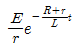
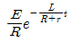
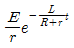
(정답률: 17%)
67. 다음 회로의 A-B간의 합성 임피던스 Z0는?
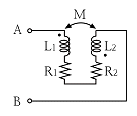
- R1+R2+jwM
- R1+R2-jwM
- R1+R2+jw(L1+L2+2M)
- R1+R2+jw(L1+L2-2M_
(정답률: 29%)
68. 선로의 임피던스 Z=R+jwL[Ω], 병렬 어드미턴스가 Y=G+jwC[℧]일 때 선로의 저항 R과 컨덕턴스 G가 동시에 0이 되었을 때 전파정수는?
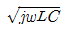
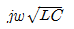
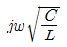
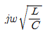
(정답률: 28%)
69. RL 직렬회로에서 다음과 같은 전압을 인가할 때 제 3고조파 전류의 실효값은 약 몇 [A]인가? (단, R=3[Ω], wL=4[Ω]이다.)
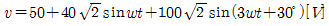
- 2
- 4
- 8
- 10
(정답률: 25%)
70. 어떤 회로망의 4단자 정수 중에서 A=8, B=j2, D=3+j2이면 이 회로망의 C는?
- 24+j14
- 8-j11.5
- 4+j6
- 3-j4
(정답률: 29%)
71. 그림과 같은 신호흐름 선도의 전달함수는?
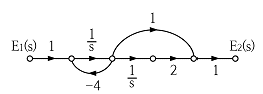
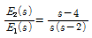
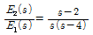
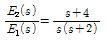
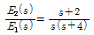
(정답률: 28%)
72. 보드선도의 이득곡선이 0[dB]인 점을 지날 때 주파수에서 양의 위상여유가 생기고 위상곡선이 –180°를 지날 때 양의 이득여유가 생긴다면 이 폐루프 시스템의 안정도는 어떻게 되겠는가?
- 항상 안정
- 항상 불안정
- 조건부 안정
- 안정성 여부를 판가름 할 수 없다.
(정답률: 29%)
73. 그림과 등가인 논리회로는?
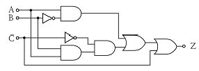
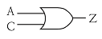
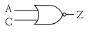
(정답률: 19%)
74. 의 미분 방정식을 상태방정식 로 표현할 때 옳은 것은?
(정답률: 26%)
75. 그림과 같은 보드 선도를 갖는 계의 전달함수는?
(정답률: 18%)
76. 전자 계전기를 사용할 때 장점이 아닌 것은?
- 온도 특성이 양호하다.
- 접점의 동작 속도가 빠르다.
- 과부하에 견디는 힘이 크다.
- 동작 상태의 확인이 용이하다.
(정답률: 14%)
77. 제어량을 어떤 일정한 목표값으로 유지하는 것을 목적으로 하는 제어법은?
- 추종 제어
- 비율 제어
- 정치 제어
- 프로그램 제어
(정답률: 26%)
78. G(s)=e-Ls에서 w=100[rad/s]일 때 이득[dB]은?
- 0
- 20
- 30
- 40
(정답률: 15%)
79. 주어진 계통의 특성방정식이 s4+6s3+11s2+6s+K=0이다. 안정하기 위한 K의 범위는?
- K < 20
- 0 < K < 20
- 0 < K < 10
- 0 >K, k > 20
(정답률: 27%)
80. 1/s-α을 z 변환하면?
(정답률: 19%)
5과목: 전기설비기술기준 및 판단기준
81. 옥내 고압용 이동전선의 시설 방법으로 옳은 것은?
- 전선은 MI 케이블을 사용하였다.
- 다선식 전로의 중성극에 과전류 차단기를 시설하였다.
- 이동전선과 전기사용기계기구와는 해체가 쉽게 되도록 느슨하게 접속 하였다.
- 전로에 지락이 생겼을 때에 자동적으로 전로를 차단하는 장치를 시설하였다.
(정답률: 28%)
82. 고압 가공전선에 ACSR을 쓸 때의 안전율은 최소 얼마 이상이 되는 이도로 시설하여야 하는가?
- 2.0
- 2.5
- 3.0
- 3.5
(정답률: 31%)
83. 그림에서 1, 2, 3, 4의 X표시 중 과전류 차단기를 시설할 수 있는 장소로 틀린 것은?
- 1
- 2
- 3
- 4
(정답률: 27%)
84. 저압 옥내간선에서 분기하여 전동기 등에만 이르는 저압 옥내 전로를 시설하는 경우 저압 옥내 배선의 각 부분마다 그 부분을 통하여 공급되는 전동기 등의 정격전류의 합계가 60[A]이면 최소 몇[A] 이상의 허용전류를 갖는 전선을 사용하여야 하는가?(오류 신고가 접수된 문제입니다. 반드시 정답과 해설을 확인하시기 바랍니다.)
- 63
- 66
- 75
- 80
(정답률: 24%)
85. 가공전선로의 지지물에 사용하는 지선의 시설과 관련된 내용으로 틀린 것은?
- 지선에 연선을 사용하는 경우 소선 3가닥 이상의 연선일 것
- 지선의 안전율은 2.5이상, 허용 인장하중의 최저는 3.31[kN] 으로 할 것
- 지선에 연선을 사용하는 경우 소선의 지름이 2.6[mm]이상의 금속선을 사용한 것일 것
- 가공전선로의 지지물로 사용하는 철탑은 지선을 사용하여 그 강도를 분담시키지 않을 것
(정답률: 30%)
86. 지중전선로에 사용하는 지중함은 폭발성 또는 연소성의 가스가 침입할 우려가 있는 것에 시설하는 지중함으로서 그 크기가 최소 몇 m3이상인 것에는 통풍장치를 설치하여야 하는가?
- 1
- 2
- 3
- 4
(정답률: 34%)
87. 목조 조영물의 전개된 장소에 있어서 저압 인입선의 옥측 부분 공사로서 옳은 것은?
- 금속관 공사
- 버스덕트 공사
- 애자사용 공사
- 가요 전선관 공사
(정답률: 26%)
88. 흥행장의 전압 전기설비 공사로 무대, 무대 마루 밑, 오케스트라 박스, 영사실, 기타 사람이나 무대 도구가 접촉할 우려가 있는 곳에 시설하는 저압 옥내 배선, 전구선 또는 이동 전선은 사용 전압이 몇 [V] 미만이어야 하는가?
- 100
- 200
- 300
- 400
(정답률: 29%)
89. 옥내에 시설하는 전동기에 과부하 보호장치의 시설을 생략할 수 없는 경우는?
- 정격출력 0.75[kW]인 전동기를 사용하는 경우
- 타인이 출입할 수 없고 전동기가 소손할 정도의 과전류가 생길 우려가 없는 경우
- 단상 전동기로써 그 전원측 전로에 시설하는 과전류 차단기의 정격전류가 15[A] 이하인 경우
- 단상 전동기로써 그 전원측 전로에 시설하는 배선용 차단기의 정격전류가 20[A] 이하인 경우
(정답률: 27%)
90. 220[V]용 전동기의 절연내력 시험 시 시험 전압은 몇 [V]로 하여야 하는가?
- 300
- 330
- 450
- 500
(정답률: 29%)
91. 전선 기타의 가섭선 주위에 두께 6[mm], 비중 0.9의 빙설이 부착된 상태에서 을종 풍압하중은 구성재의 수직 투영면적 1[m2]당 몇 [Pa]을 기초로 하여 계산하는가? (단, 다도체를 구성하는 구성하는 전선이 아니라고 한다.)
- 333
- 372
- 588
- 666
(정답률: 18%)
92. 발전소, 변전소, 개폐소 또는 이에 준하는 곳에서 차단기에 사용하는 압축공기장치는 사용압력의 몇 배의 수압으로 몇 분간 연속하여 가했을 때 이에 견디고 새지 않아야 하는가?
- 1.25배, 15분
- 1.25배, 10분
- 1.5배, 15분
- 1.5배, 10분
(정답률: 25%)
93. 직류식 전기 철도용 급전선로, 직류식 전기 철도용 전차선로 또는 가공 직류 절연 귀선이 기설 가공 약전류 전선로와 병행하는 경우에 유도 작용에 의한 통신 장해를 주지 아니하도록 하는 전선과 기설 약전류 전선 사이의 이격 거리는?(오류 신고가 접수된 문제입니다. 반드시 정답과 해설을 확인하시기 바랍니다.)
- 직류 복선식 전기 철도용 급전선 또는 전차선의 경우에는 2.5[m] 이상
- 직류 복선식 전기 철도용 급전선 또는 전차선의 경우에는 3[m] 이상
- 직류 단선식 전기 철도용 급전선, 전차선 또는 가공 직류 절연 귀선의 경우에는 4[m] 이상
- 직류 단선식 전기 철도용 급전선, 전차선 또는 가공 직류 절연 귀선의 경우에는 4.5[m] 이상
(정답률: 16%)
94. 사용전압이 220[V]인 경우 애자사용 공사에서 전선과 조영재 사이의 이격거리는 몇 [cm] 이상이어야 하는가?
- 2.5
- 4.5
- 6.0
- 8.0
(정답률: 24%)
95. 전선의 단면적 55[mm2]인 경동연선을 사용하는 경우 특고압 가공전선로 경간의 최대한도는 몇 [m]인가? (단, 지지물은 목주 또는 A종 철주이다.)
- 150
- 250
- 300
- 500
(정답률: 14%)
96. 물기있는 장소 이외의 장소에 시설하는 저압용의 개별 기계기구에 전기를 공급하는 전로에 전기용품 안전 관리법의 적용을 받는 인체감전 보호용 누전 차단기의 정격으로 알맞은 것은?
- 정격감도전류 30[mA] 이하, 동작시간 0.03초 이하의 전류 동작형
- 정격감도전류 45[mA] 이하, 동작시간 0.01초 이하의 전류 동작형
- 정격감도전류 300[mA] 이하, 동작시간 0.3초 이하의 전류 동작형
- 정격감도전류 450[mA] 이하, 동작시간 0.1초 이하의 전류 동작형
(정답률: 30%)
97. 제 2종 특고압 보안공사의 기준으로 틀린 것은?
- 특고압 가공전선은 연선일 것
- 지지물이 목주일 경우 그 경간은 100[m] 이하일 것
- 지지물이 A종 철주일 경우 그 경간은 150[m] 이하일 것
- 지지물로 사용하는 목주의 풍압하중에 대한 안전율은 2 이상일 것
(정답률: 14%)
98. 가공 전선로에 사용하는 지지물의 강도 계산에 적용하는 풍압하중 중에서 병종 풍압하중은 갑종 풍압하중에 대한 얼마의 풍압을 기초로 하여 계산한 것인가?
- 1/2
- 1/3
- 2/3
- 1/4
(정답률: 29%)
99. 풀용 수중 조명등에 사용되는 절연 변압기의 2차측 전로의 사용 전압이 최소 몇 [V]를 초과하는 경우에는 그 전로에 지락이 생겼을 때에 자동적으로 전로를 차단하는 장치를 하여야 하는가?
- 30
- 60
- 150
- 300
(정답률: 21%)
100. 사용전압이 380[V]인 저압 보안공사에 사용되는 경동선은 그 지름이 최소 몇 [mm] 이상의 것을 사용하여야 하는가?
- 2.0
- 2.6
- 4.0
- 5.0
(정답률: 16%)